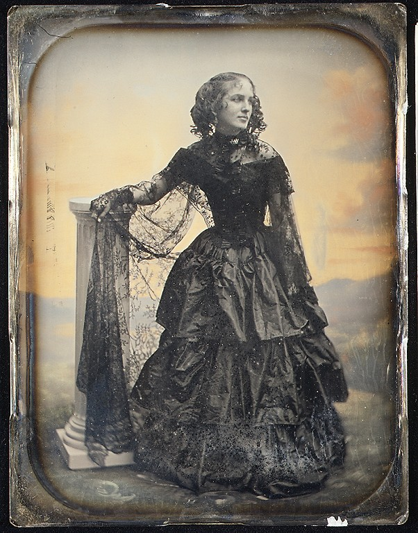
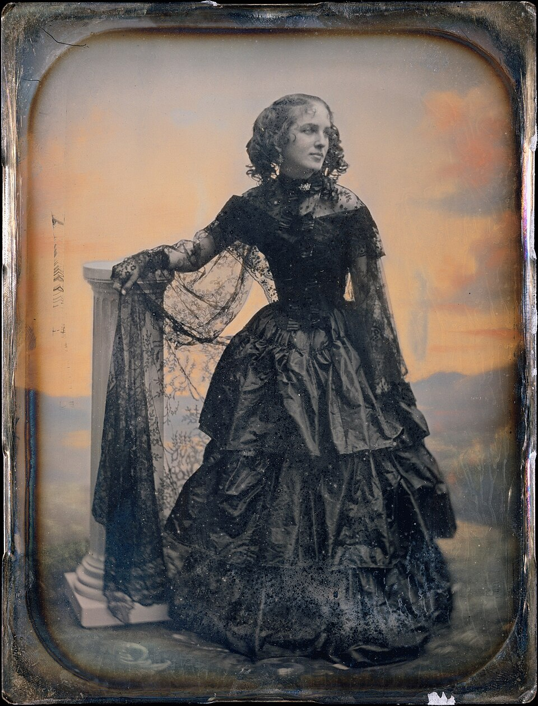
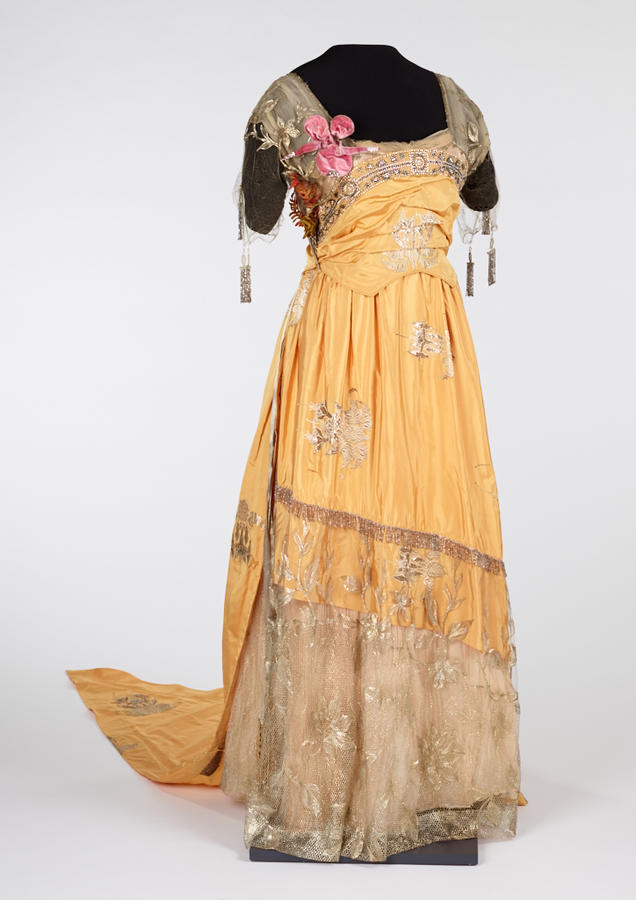
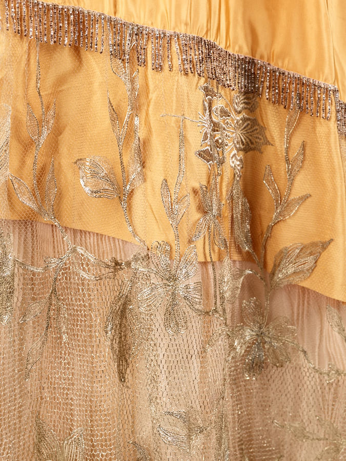
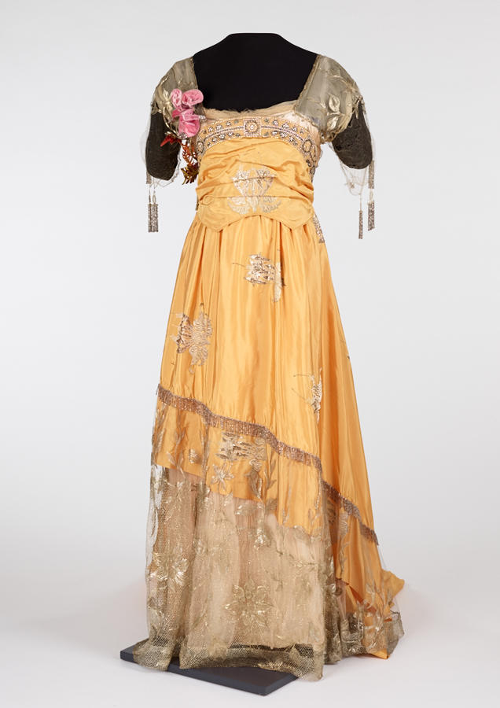
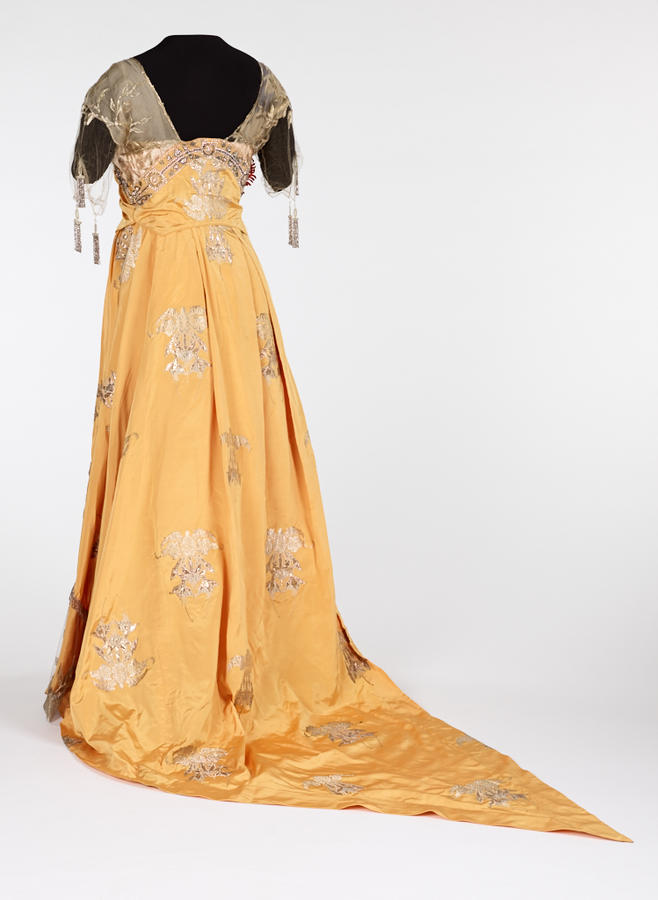
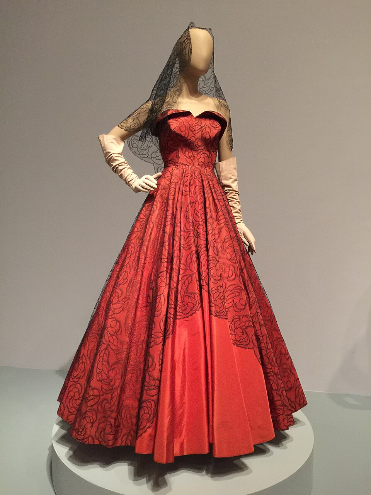
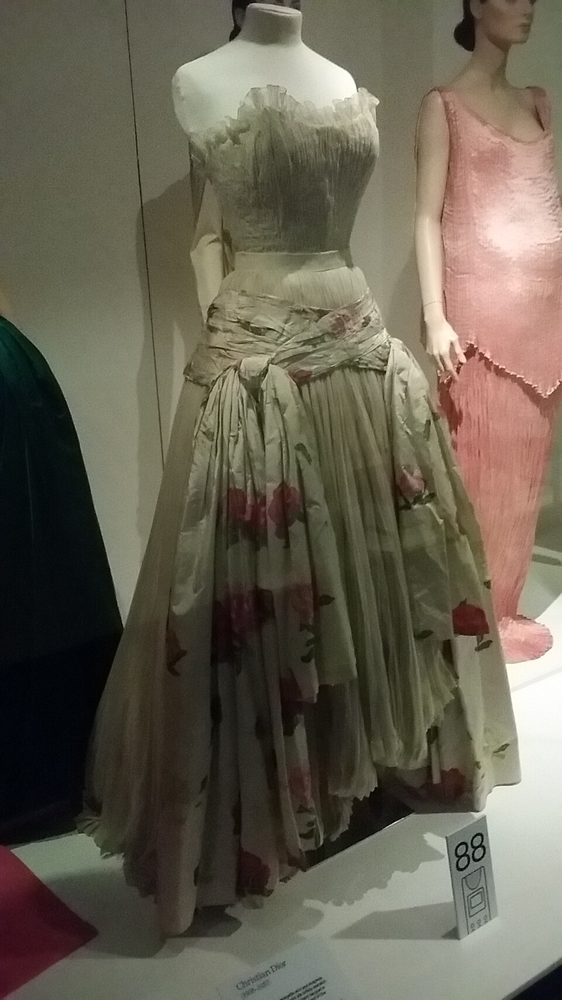

The Luminous Architecture of Pure Silk Taffeta
Sculptural drape, luminous chromatic vibration, and the unmistakable acoustic rustle of fine French silk. We engineer custom evening gowns and opera capes using heritage high-density plain weaves and hand-spun mulberry fibers.

The Physical Poetry of High-Density Plain Weave
Unlike soft velvets or flowing crepes, silk taffeta is defined by its crisp architectural rigidity, dimensional pleating memory, and optical depth.

Iridescent Shot Silk Weaving
Woven with contrasting warp and weft yarns—deep ruby organzine intersected by midnight amethyst tram—generating dynamic color transitions as the garment moves under ambient light.
Explore Optical Weave
The Classical Silk Scroop
The distinctive rustling whisper of pure silk taffeta arises from microscopic friction between tightly twisted, acid-treated silk fibroin filaments, creating a sonic signature of luxury.
Acoustic Physics
Architectural Box Pleating
The natural elasticity and tight structural density of taffeta enables voluminous cantilevered flounces, dramatic bustle draping, and crisp geometric silhouettes that hold shape indefinitely.
Bespoke ServicesHaute Couture Silk Classifications
Comparative material analysis detailing the structural divergence of silk weaves produced at our Manhattan atelier.
| Textile Variety | Weave Structure | Warp / Weft Twist | Acoustic Scroop | Drape Modulus |
|---|---|---|---|---|
| Lyon Silk Taffeta (Haute) | Balanced Plain Weave (1:1) | High-Twist Organzine / Tram | Maximum Resonance | Crisp • High Rigidity |
| Silk Duchesse Satin | High-Float Satin Weave | Low-Twist Filament | Muted / Silent | Heavy • Fluid Liquid |
| Silk Faille | Pronounced Ribbed Weave | Fine Warp / Heavy Weft | Moderate Soft Sound | Semi-Crisp Architectural |
| Silk Organza | Open Plain Weave Sheer | Ultra-Hard Twist Filaments | High Metallic Whisper | Ultra-Light Spring Memory |
Master Dressmaking Benchwork
Every pleat is hand-pinned, every seam pressed under dry iron weight, and every bodice bone tailored to bespoke client measurements.

Cantilevered Box Pleats
Architectural flounces engineered to maintain structural loft without bulky petticoats.

Silk Jacquard Insets
Intricate floral motifs woven directly into high-density taffeta panels.

Mulberry Organzine Warp
Filament examination under atelier optical bench ensuring zero surface slubs.

Corseted Bodice Boning
Internal spiral steel boning providing flawless structural support beneath silk.
Commission Your Bespoke Silk Taffeta Gown
Visit our Manhattan haute couture salon at 181 Mercer Street for private draping, textile selection, and individualized patternmaking.
Schedule Private Consultation